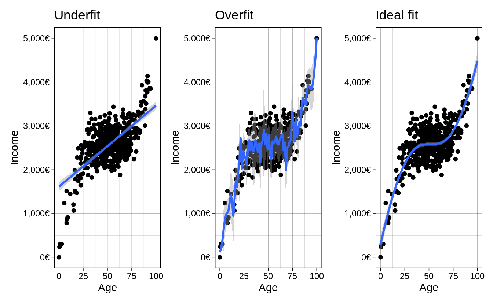

Chapter 1 Machine Learning for Social Scientists
Machine Learning practitioners and Social Scientists share many things in common. These shared traits are mostly related to the transformation, analysis and evaluation of statistical models. In fact, when many of my fellow social scientists take any introductory course on machine learning, I often hear that many of the things they get taught are very common in traditional statistics classes, if not the same. This is good news! This means that you already have a foot inside the field without even knowing it. Machine Learning practitioners use many of the same statistical model we use and also many of transformation techniques that we use. However, there are important differences on how we analyze data and how we answer our questions. In this chapter I will elaborate on how machine learning practitioners have developed strategies different from social scientists for analyzing their data, how their analysis workflow compares to ours and finally, a tour around their way of thinking, which has evolved to be very different from ours.
I hope that by understanding the strategies and techniques that machine learning practitioners use, social scientists would expand their analysis toolbox, allowing us to complement their way of thinking with our strong research design skills and modelling techniques.
1.1 A different way of thinking
The first question we want to ask ourselves is, what is machine learning? Machine Learning bears indeed a fancy name which brings to mind thoughts related to artificial intelligence and robots. However, as you’ll see throughout the course, most terms and models used in machine learning are actually what we know as statistical models. The overaching difference in the definition of machine learning and social statistics is not the models or new strategies for analyzing data. It is the main objective of the analysis. What is Machine Learning after all?
Using statistical methods to learn the data enough to be able to predict it accurately on new data
That sounds somewhat familiar to us social scientists. Perhaps our goal is not to predict our data but it is certainly to learn it and understand it. In particular, social scientists are interested in figuring out if our theoretical description of the problem fits the data we have collected it. We do that by carefully build a model that explains the problem, we try to learn it really well and finally understand it enough such that if we collected the exact same data again, our explanation would replicate. How does this differ from the way of thinking of machine learning practitioners? The main objective in a machine learning problem is accurate predictions; that is, regardless of how well we understand a problem, we want learn the data well enough to predict it well. Prediction problems are usually concerned with building and tweaking a model that predicts a dependent variable accurately on your data, such that when new data arrives, the model can predict it just as accurately.
The difference between the two cultures (breiman) is the problem of inference versus prediction. That is the fundamental difference between the approach used by social scientists and practitioners of machine learning. However, for having such drastic differences in our objective, we share a lot of common strategies. For example, here’s the typical workflow of a social scientist:

This is our safe zone: we understand these steps and we’ve exercised them many times. We begin by importing our data and inmediately start to clean it. This involves, for example, collapsing fine grained groups into bigger categories, transforming variables using logarithms and creating new variables which reflect important concepts from our theoretical model. Once we’re confident with our set of variables, we begin the iterative process of visualizing our data, fitting statistical models and evaluating the fit of the model. This is an iterative process because the results of our model might give us ideas on new variables or how to recode an existing variable. This prompts us to repeat the same process again with the aim of carefully building a model that fits the data well. Well, let me break it to you but this same process is very familiar to the machine learning process:

They import their data, they wrangle their data, they fit statistical models and they evaluate the fit of their models. They might have different names for the same things but in essence, they are more or less the same. For example, here are some common terms in the machine learning literature which have exact equivalents in social statistics:
- Features –> Variables
- Feature Engineering –> Creating Variables
- Learning Algorithms –> Statistical Models
- Supervised Learning –> Models that have a dependent variable
- Unsupervised Learning –> Models that don’t have a dependent variable, such as clustering
- Classifiers –> Models for predicting categorical variables, such as logistic regression
and you’ll find more around. These are the common steps which you’ll find between both fields. However, machine Learning practioners have developed extra steps:

- Training/Testing data –> Unknown to us
- Cross-validation –> Unknown to us
- Loss functions –> Model fit –> Known to us but are not predominant (\(RMSE\), \(R^2\), etc…)
These are very useful concepts and we’ll focus on those in this introduction. In this introduction I won’t delve into the statistical models (learning algorithms) used in machine learning these will be discussed in later chapters but I wanted to highlight that although they share similarities with the models used in social statistics, there are many models used in the meachine learning literature which are unknown to us.
1.2 Split your data into training/testing
Since the main objective in machine learning is to predict data accurately, all of their strategies are geared toward avoiding overfitting/underfitting. In other words, they want to capture all the signal and ignore the noise:
library(ggplot2)
library(patchwork)
library(scales)
set.seed(2313)
n <- 500
x <- rnorm(n)
y <- x^3 + rnorm(n, sd = 3)
age <- rescale(x, to = c(0, 100))
income <- rescale(y, to = c(0, 5000))
age_inc <- data.frame(age = age, income = income)
y_axis <- scale_y_continuous(labels = dollar_format(suffix = "€", prefix = ""),
limits = c(0, 5000),
name = "Income")
x_axis <- scale_x_continuous(name = "Age")
underfit <-
ggplot(age_inc, aes(age, income)) +
geom_point() +
geom_smooth(method = "lm") +
y_axis +
x_axis +
ggtitle("Underfit") +
theme_linedraw()
overfit <-
ggplot(age_inc, aes(age, income)) +
geom_point() +
geom_smooth(method = "loess", span = 0.015) +
y_axis +
x_axis +
ggtitle("Overfit") +
theme_linedraw()
goodfit <-
ggplot(age_inc, aes(age, income)) +
geom_point() +
geom_smooth(method = "loess", span = 0.9) +
y_axis +
x_axis +
ggtitle("Ideal fit") +
theme_linedraw()
underfit + overfit + goodfit
The first plot shows a model which is not flexible, as it fits a straight line without capturing the subtle non-linearities of the data. The second plot is too flexible as it captures much of the random noise of the non-linear relationship. Finally, the third plot shows the ideal fit, where the fitted line is flexible enough to capture the non-linear relationship in the data yet it it is mainly unaffected by the random noise in the data. How would social scientists fit a model? They would take the entire data

and fit the model on it. How do you know you’re overfitting? Is there a metric? Is there a method? Well, one very easy and naive approach is to randomly divide your data into two chunks called training and testing:

The training data usually consists of a random sample of around ~70% of the initial data and the testing data a random sample of ~30% of the initial data. If a particular row is in the training data, it must not be on the testing data. If a particular row is in the testing data, it shouldn’t be in the training data either. Let me clarify this: being in one chunk should mean that that specific row should not be in the other chunk. These two chunks should be completely independent of each other. Why should splitting the data help us fix the problem of overfitting? Because you can elaborate your model in the training set as much as you want, and when you’re confident enough, the testing set can serve as an unseen, pristine source of data on which you can evaluate your model.
In the training chunk

fit your model and tweak it enough such that you can evaluate whether it’s making accurate predictions. You can think of this chunk as the complete data to perform your analysis. It is the equivalent of the initial data where social scientists fit their data (that is, without partitiong). Once you’re very comfortable with your model, the best recipe for checking whether your model was overfit is to use this fitted model to predict on the other chunk of data (the testing data):

If you tweaked your model in such a way that it learned the noise of your training data, it will perform poorly on the testing data, since you the model didn’t capture the overall trend in the data but rather the noise.
For the sake of an example, let’s suppose that you fit your model several times on the training data, tweaking it to improve performance. When you think you’re ready, you use this model to predict on the testing data and find out that the model was indeed overfitting the data. You go back to the training data, tweak some more, run some models again and when you think you’re model is ready again, you predict on your testing data again and find that it improved. Then you repeate the process again, \(3\), \(4\), \(5\), etc… times. If you do that, you will, in very subtle ways, start to overfit your model on the testing data! Think about it: you’re fitting a model N times on your training data, evaluating its fit on the testing data and then tweaking again to improve the prediction on the testing data. The testing data should serve as the final dataset to compare your model: you should not tweak the model again after seeing how your model fits the unseen testing data.
How can we evaluate whether we’re overfitting with the training data alone, then? Enter cross-validation
1.3 Cross-validation
The idea behind cross-validation is to allow the analyst check whether they’re overfitting the data without predicting on the testing data. How does it work? First, we only select our training data
and replicate the data 10 times

The 10 rectangular red rows below the training data, contain an exact replica of the initial training data. That is, if the initial training data has 500 rows and 10 columns, then each of these red rectangle rows also has 500 rows and 10 columns. The idea behind this approach is that you now have 10 different chances of tweaking your model:

and then

This approach offers a way to iterate as many times as you want on tweaking your model and predicting on the cross-validated testing data without actually predicting on the initial testing dataset. This is the least bad approach that is currently accepted in the literature. Why is it the least bad approach? Because if we tweak the model on these 10 replicas one time, then a second time, then a third time, etc…, we’ll also start overfitting on each of these 10 slots. The superiority of this approach over tweaking on the training data is that since we have 10 replicas, we can take the average of our model fit and also obtain standard errors. This allows to have a somewhat balanced account of how our model fit is doing and the uncertainty around it.
That said, since we will always overfit in someway using a cross-validation approach, the final error of your model fit on the training data will always be over optimistic (lower error than what you will actually have, if you predicted on the pristine testing data.